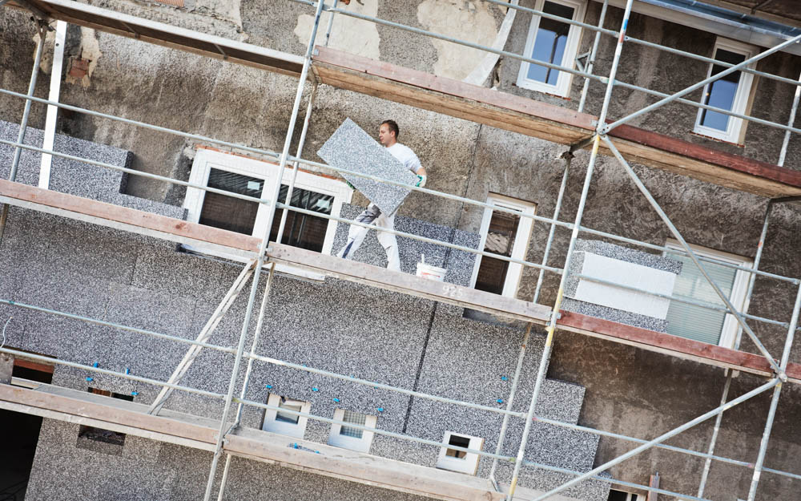

Sanierungsberatung
Schritt für Schritt zur energieeffizienten Immobilie
Möchten Sie Energiekosten senken, den Wohnkomfort steigern und gleichzeitig den Wert Ihrer Immobilie langfristig sichern? Eine energetische Sanierung ist der Schlüssel dazu – doch wo fängt man am besten an? Als zertifizierter Energieberater in Bocholt stehe ich Ihnen bei allen Fragen rund um Energieeffizienz, energetische Sanierung und Fördermöglichkeiten kompetent zur Seite. Ich zeige Ihnen, welche Maßnahmen an Ihrem Gebäude wirklich sinnvoll sind und wie Sie das Maximum an staatlichen Fördergeldern mitnehmen.

Häufige Fragen vor einer Sanierung
- Wo fange ich an? Dämmung, neue Fenster oder doch zuerst die Heizung tauschen?
- Welche Materialien werden verwendet? Brandschutz? Dämmeigenschaften? Ökologie?
- Was kostet das? Und welche Investitionen rechnen sich am schnellsten?
- Welche Förderung gibt es? Wie beantrage ich Zuschüsse von KfW oder BAFA, ohne Fehler zu machen?
Genau hier setze ich an. Ich bringe Licht ins Dunkel und erstelle für Sie einen maßgeschneiderten Fahrplan.
Meine Leistungen im Überblick
- Bestandsaufnahme & Gebäudeanalyse: Vor-Ort-Termin zur genauen Untersuchung der Gebäudehülle (Wände, Dach, Fenster) und der Anlagentechnik (Heizung, Lüftung).
- Individueller Sanierungsfahrplan (iSFP): Erstellung eines staatlich geförderten Gesamtkonzepts. Sie sehen genau, welche Maßnahmen in welcher Reihenfolge sinnvoll sind – inklusive Kosten- und Einsparschätzung.
- Fördermittelberatung & -beantragung: Ich finde die passenden Förderprogramme (BAFA, KfW) für Sie und übernehme die komplette bürokratische Abwicklung.
- Baubegleitung (Optional): Qualitätskontrolle während der Sanierungsphase, damit die Handwerker alles fachgerecht und nach den Fördervorgaben umsetzen.
Ihre Vorteile auf einen Blick
- Unabhängigkeit: Ich verkaufe keine Produkte oder Handwerksleistungen. Meine Beratung ist zu 100% neutral und an Ihren Interessen orientiert.
- Geld sparen: Durch den iSFP sichern Sie sich zusätzliche Bonus-Förderprozente vom Staat.
- Zukunftssicherheit: Ihr Haus erfüllt nach der Sanierung alle gesetzlichen Vorgaben und ist bestens für die Zukunft gerüstet.
Bereit für ein energieeffizientes Zuhause? Sprechen wir unverbindlich über Ihr Projekt. Kontaktieren Sie mich gerne per Nachricht oder telefonisch – ich freue mich darauf, Sie dabei zu unterstützen, Ihre Immobilie energetisch zu optimieren und zukunftsfähig zu gestalten.